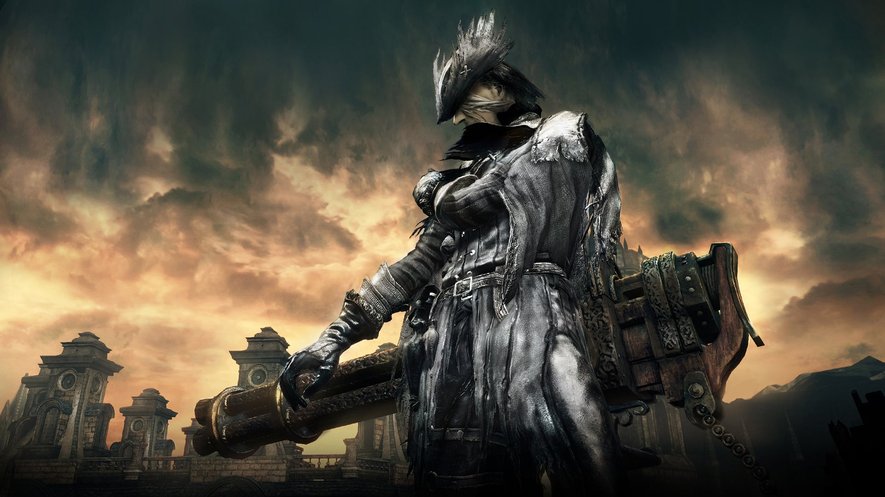
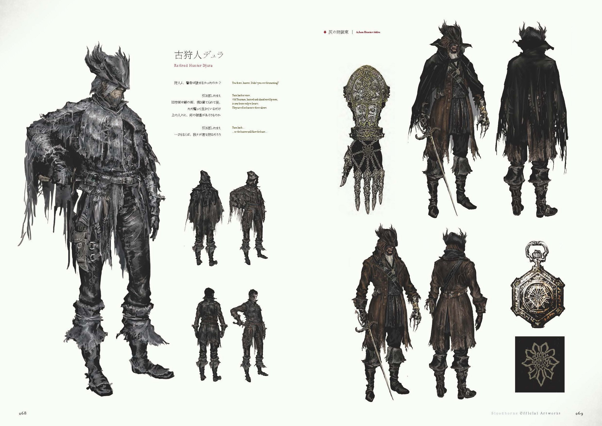
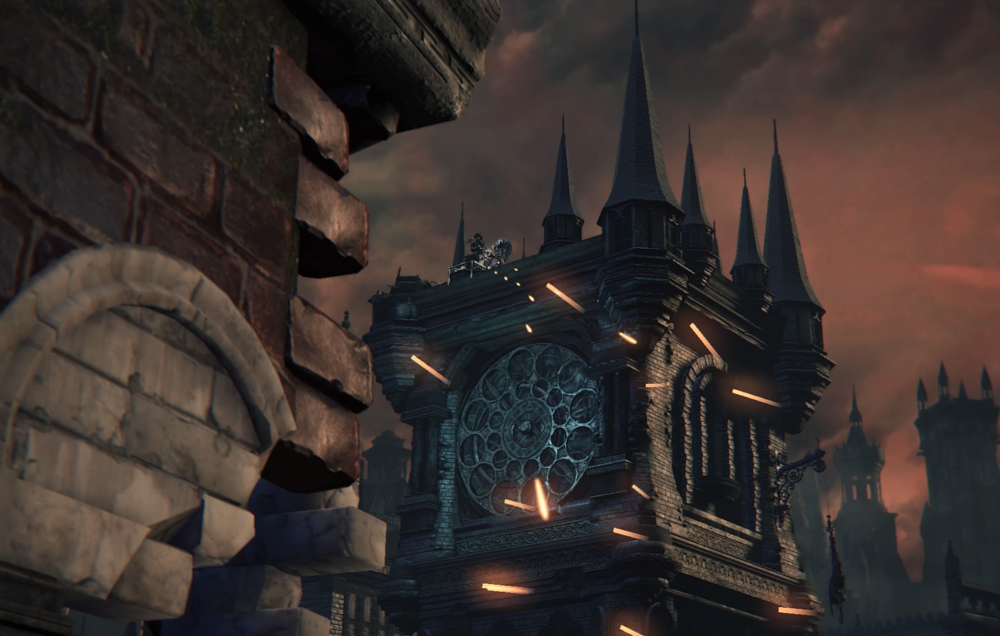

Djura |
|
|---|---|
|  | |
| General Info | |
| Location | Drops |
| Old Yharnam | (875) Blood Echoes Powder Keg Hunter Badge |
Djura is a non-player character in Bloodborne, found in Old Yharnam.
"An old veteran hunter who is said to possess amazing skill. No one has seen him in many years, and he looks like he's been on his own for some time."
Location
- In Old Yharnam, at the top of the tower with the gatling gun.
Details
Can this NPC be an enemy?: Yes
- Djura is hostile by default.
- If you have befriended Djura, he can become hostile again in one of the following ways:
- When Djura is friendly and the player attacks him.
- When Djura is friendly and the player chooses to "Hunt the beasts of Old Yharnam".
- When Djura is friendly and the player agrees to spare the beasts, but attacks one of the monsters in front of the tower (including the hunter at the base of the tower and excluding the ravens).
- When Djura is friendly and a mob in front or at the base of the tower dies for any reason, including fall damage, fire damage, or the player directly attacking said mob.
- You can befriend him when the Blood Moon is out.
- See below on how to befriend Djura.
Can this NPC be an ally?: Yes
- The only time Djura will become friendly is when the player visits the Darkbeast Paarl for the first time and gains the 1 Insight for entering the boss room. He may stay hostile if you did not die to Paarl and just used a Bold Hunter's Mark to leave Paarl's boss room. (Note: Djura can become hostile again even after he has become friendly.)
- To avoid hostility when Djura is friendly, approach Djura from the back of Old Yharnam and don't go in front of the tower (to get to the back of Old Yharnam, awaken at the Church of the Good Chalice or the Graveyard of the Darkbeast)
- When the player talks to Djura when he is friendly, the player will have the choice to "Hunt the beasts of Old Yharnam" or "Spare the beasts of Old Yharnam".
- If the player agrees to spare the beasts, Djura will give the player the Powder Keg Hunter Badge and the Brush Off Dust gesture, and remain docile unless provoked as listed above.
- If the player already has the Powder Keg Hunter Badge, the player will receive a Bold Hunter's Mark instead.
Drops: If killed, will drop 875 Blood Echoes and Powder Keg Hunter Badge (which unlocks the Rifle Spear, Stake Driver, Ashen Hunter Set for purchase within the Hunter's Dream).
Guide for friendly Djura:
Note: Djura must still be alive. (If you have already killed Rom, the Vacuous Spider, then go to Yahar'gul, Unseen Village and enter Darkbeast Paarl boss room)
- Kill the Blood-starved Beast boss in Old Yharnam to spawn Snatchers.
- Awaken at the Cathedral Ward lantern, exit straight, look to the right side and get killed by the Snatcher in the corner.
- After being taken to Hypogean Gaol, make your way to Darkbeast Paarl and enter the boss room.
- Kill Darkbeast Paarl then open the big gate into Old Yharnam (alternatively, during the fight, use a Bold Hunter's Mark or die then awaken at Church of the Good Chalice)
- Walk to Djura and climb up the ladder to talk to him. Do not attack anything.
- Choose "Spare the beasts of Old Yharnam" and receive rewards.
Dialogue
When entering Old Yharnam:
"You there, hunter. Didn't you see the warning? Turn back at once."
"Old Yharnam, burned and abandoned by men, is now home only to beasts."
"They are of no harm to those above. Turn back..."
"...or the hunter will face the hunt."
When progressing through Old Yharnam:
"...You are a skilled hunter."
"Adept, merciless, half-cut with blood. As the best hunters are."
"Which is why I must stop you!"
When friendly:
"Well, well... How did you get in here? Ah, it's no matter."
"What brings you to Old Yharnam? I've no interest in matters further up, but you must not disturb this place."
"The beasts do not venture above, and mean no harm to anyone."
"If you still insist on hunting them, then I will hunt you first. You understand me?"
When the player chooses to spare the beasts:
"Yes, very good. I no longer dream, but I was once a hunter, too."
"There's nothing more horrific than a hunt. In case you've failed to realize..."
"The things you hunt, they're not beasts. They're people."
"One day, you will see... Hmm, it's time you got going..."
"But first, a farewell gift. I have no use for it anyway." (Gives Powder Keg Hunter Badge, Brush Off Dust gesture)
"What is it? Surely I need not repeat myself. Go, I say."
"You have the whole night to dream. Make the best of it."
When the player attacks an enemy in the area in front of the tower after sparing the beasts:
"Heheh, you devious rat! The makings of a true hunter, this lass!"
"Very well. Then there's no need to hold back! The beasts will feast tonight!"
When the player chooses to hunt the beasts:
"Of course, I thought as much."
"You are a true hunter. Which is why I must stop you!"
When the player attacks him while he is friendly:
"Is it the blood, or are you just raving mad?"
"When the frail of heart join the fray...the hunter becomes the hunted!"
Upon killing you:
"I should think you still have dreams? Well, next time you dream, give some thought to the hunt, and its purpose."
Upon killing you after attacking him or killing a beast while he is friendly:
"You still dream I should think? Then come as often as you like, I'll show you another death."
Upon death:
"It's you... You're the beast... Can't you see what you're doing? It's madness..."
Strategy (if you actually decide to fight him fair and square)
- Djura is an incredibly tough opponent who possesses a very large health pool, be prepared for a long and difficult fight.
- When approaching his rooftop perch in Old Yharnam, Djura will attack the approaching player with a constant volley from his mounted Gatling Gun, which while easy to dodge, can lead to an untimely death if you allow yourself to be distracted by the enemies in the area. Heading towards Djura from the Old Yharnam Lamp simply jump off the ledge and head towards the building he is on top of, there will be a ladder to the left of a doorway leading to a rooftop with another ladder leading to Gyula's perch.
- Once confronted Djura will switch to a Stake Driver and Hunter Blunderbuss while tossing the occasional Firebomb at his opponent. Djura is an incredibly aggressive and quick opponent opponent giving players very little time to heal or counter his attacks and will do a quick dash attack, which has a very brief charge time, an explosion attack from his Stake Drive or repeatedly fire his Blunderbuss at players who attempt to gain distance or heal. Healing will often lead to Djura using his dash attack.
- Simply mashing R1 or a poorly timed Gun shot will cause Djura to respond with a Gunshot of his own stunning the player and giving Djura a riposte opportunity which will very likely lead to an instant death even at full health.
- Djura himself may also be parried, though difficult, and while untested the very brief charge window before his dash attack may be the best opportunity for a successful Gun shot parry.
- Do not underestimate this fight, Djura is comparable to a skilled human invader in terms of difficulty and the small combat area does little to help the situation.
Falling Off Strategy
Note: With this strategy, the item he drops is usually not reachable, so reload the game (can be done by dying, going to the Hunter's Dream, or exiting the game) and the item will spawn next to the heavy machine gun.
- Once you enter Old Yharnam, Djura will start to attack you, and no efforts after will stop the attack other than killing him. Clear out all the enemies up to the first ladder of the Djura fight (you can kill the PK fighter easy by waiting here. He'll do one strike, either a blunderbuss or sword, then retreat. You can bottle-neck his retreat and land massive damage without fear of retribution.) At the top of the tower, make sure you do not hesitate. Stopping on the ladder will allow Djura to blunderbuss you as soon as you get off the ladder. If you charge up and off the ladder, you should roll (important as if you don't, he will repose and combo you) and then R1 him off the edge of the roof.
- Another possible method is to just climb up the ladder, bait him into following you, and then slide back down. Djura may (YMMV) just fall in pursuit of you (confirmed).
- A third strategy is to climb up the ladder, and repeatedly shoot him until he falls off the tower
- When you reach the top of the ladder, stand your ground, Djura should shoot at you from the distance. When he shoots dodge to the side. Djura will then go for you, so dodge again. At this point Djura's back will be to the edge of the building so keep hitting L2 to shoot him off the edge of the tower. Doing it this way will mean he lands on the gantry next to the ladder you climbed up, meaning you don't have to reload to get his items.
- Once obtained, Beast Roar can effectively be used to knock him off the roof.
- You can also repeatedly shoot him with a Hunter Pistol until he falls off. This strategy is not guaranteed but is possible. It takes 3-6 shots before he falls or moves out of the way.
- You can also use a Hunter Blunderbuss, run halfway to Djura, then shoot him twice. Not sure if 100% success rate.
- The absolute fastest and guaranteed way to knock Djura off is to use the 2-handed Hunter Axe with one running R1 attack. Before climbing the ladder, transform the Hunter Axe into its 2-handed form. As you reach the top of the tower, quickly lock onto Djura during your standing animation, sprint towards him, then use the R1 attack. If you correctly gauge the distance, your running R1 attack will reach him right before he fires his blunderbuss and he'll fall off.
- Another strategy is to use the Cannon the second you climb up on the top. This will immediately send him flying off the roof, instantly killing him. You may have to reload the area to get the item, as there is a glitch where the item dropped will float at an unreachable height above the bridge below the tower.
Lore
- Djura, to some extent, caters to the beasts that inhabit Old Yharnam.
- Djura's dialogue suggests that as a hunter, he struggles with an ethical dilemma regarding beasts, and the slaying of them, in general.
- It is a Hunter's job to slay beasts, but Djura more than likely had an epiphany at some point in his career in which he realized that every beast was once a person, and thus, killing beasts is akin to killing humans.
- It can be assumed that Djura does not associate with Old Yharnam for any particular emotional reasons. It is likely that he chooses to defend this place, of all other places, because it is remote and unimportant in the world. In his dialogue, he suggests that the beasts here do not bother anyone, and thus shouldn't be bothered in return.
- In some ways, you could consider Old Yharnam to be Djura's utopia of sorts. And he, quite literally, aims to maintain the peace here.
- Which raises an important question: who set fire to the crosses at the beginning of the area and around the church?
Trivia
- 'Djura' is the Slavic variant of 'George' in English. George, meaning farmer, or earthworker, may be an allusion towards his views of letting beasts roam about in Old Yharnam and rooting out any tresspassers that would cause a disturbance.
- Djura is voiced by William Houston, the same man who voiced both King Vendrick in Dark Souls 2 and Marvellous Chester in the Artorias of the Abyss DLC for Dark Souls 1.
- The heavy machine gun is not usable.
- Djura has 3 companions: one is under his tower, the second in the hunter's nightmare and the last one is unknown, bot it is higly possible that he could be Beastclaw Jozef, since he wears the Charred Hunter set like all other Djura's companions and he's found in Loran dungeon, a place were there are beasts similar to Old Yharnam's.
Other Notes:
- He will still befriend you even if you aggro him (he shoots at you) when you pass through the first time as long as you don't kill him and then enter the Darkbeast Paarl boss room.
Gallery:
 
{kind=link}
{kind=link}
{kind=link}
{kind=link}
{kind=link}
{kind=link}
 Anonymous
AnonymousI did his questline today. Here's what I got:
1. Did not touch any of the beasts in the upper part of the map.
2. He blew up 2 of the beasts while I was making my way through the area.
3. I made it to the lower part of the map and whilst fighting a werewolf, I hit 2-3 beasts that came in the way (but did not kill them). I quick exited the game to reset the spawns.
4. I killed Bloodstarved Beast.
5. I got kidnapped by a Snatcher.
6. I killed Paarl.
7. I made my way to Djura through Paarl's gate and he was peaceful.
- Anonymous
I always loved that people were like, "Oh, he really makes you think about the hunt and what you're doing." And when you read his set, the game's literally like, "Yeah, this guy's a complete idiot lmao."
- Anonymous
I defeated Paarl but I forgot you had to approach him from the back to not aggro him, so I went to the Dream and warped to the Old Yharnam lantern and approached him normally and he attacked me
After that even if I approach from the Paarl lantern he still stays hostile
So I think I permanently screwed it up just by approaching from the wrong direction
- Anonymous
So will he still be friendly if my co op partner attacked an enemy (not killed) or did my Friend ruin the mission for me?
- Anonymous
Can I still befriend Djura if I kill or attack the hunter at the bottom of the tower?
- Anonymous
This guys quest is all over the place and honestly doesn't seem finished. The die to paarl strategy is weird because paarl isn't even the only trigger to get him friendly. if you skip old yharnam via a glitch he will still be nice without you ever needing to see paarl, so why does that even work? it just seems like bizarre scripting hell
- Anonymous
- Anonymous
If he dies by falling off (he flew off the building after a visceral attack) how do you get the badge from him? If I reload the area will it be where he was originally?
- Anonymous
- Anonymous
if you cant be asked to complete his questline just shoot him off the building
- Anonymous
Djura can get hostile if you kill the npc thats next to him too.
He wont atack you but if you get on vision field he will start shooting
- Anonymous
i had difficulty killing him so i just shoot him to death. it works very well!
- Anonymous
He's an old goon. I tried to not attack the ghouls the first time, and he still fired. Talks of hunting beasts, yet sprays the gatling gun at hunters without any regard. Can't even train the beasts to be friendly next time either.
- Anonymous
So I spent a decent amount of effort to befriend Djura on NG+, then I remembered I hadn't looted the items from Old Yharnam. While I was doing that, I climbed the ladder on the building in front of Djura, then saw there was a beast up top and went back down the ladder. Except another beast had started following me up the ladder, so when I went down the ladder it took a tiny amount of damage, and aggroed Djura. So don't be like me, and loot Old Yharnam before you talk to Djura.
- Anonymous
he is one of my favorite npcs in the series. he is like kaathe in dark souls 1. he makes the player think that "is the thing that i'm doing really a good thing"? i really like that
- Anonymous
i skipped old yharnam, then came through paarl's gate after bloodmoon/yahar'gul.
He doesn't aggro, and will talk to you, that much is true.
But he also didn't aggro after i attacked and killed his hunter pal,
instead he just said his "you devious rat. . ." line and wouldn't talk nor attack me afterwards.
- Anonymous
- Anonymous
- Anonymous
Would've been cool if, when he does call you out upon first entering Old Yharnam, the first monster you see he yells "don't touch him!" and if you don't attack, he instead beckons you to meet him and to "not attack any of the locals", which would already give you a sense of how he views the beasts and give players a more likely chance of meeting him without becoming hostile. It seems far too complicated to do the necessary steps just to say hi to him and even on my 4th playthrough I never realised there was an option to meet him without turning him hostile until now.
- Anonymous
It does not matter if the beasts were people once. They are beasts now, which is why Djura is wrong
- Anonymous
Djura the leftard lmao.
#StopHunterBrutality
#BeastLivesMatter
- Anonymous
Djura is not a Slavic version of "George" (I assure you, as a Slavic bearer of this name). Djura - squire and servant of the Cossack foreman in Ukraine (Slavic country) in the 16th-18th centuries.
- Anonymous
How are you supposed to get to the BSB without going through old yarnham???
- Anonymous
Anyone else interested to know what the flying statue is supposed to be doing there at the beginning of Old Yharnam?
- Anonymous
I walked up, got close and swung a few times. He rolled off the edge without me doing anything lmao
Luckily he fell right at the edgy of the platform below
Dunno if anyone will read this, but after killing Darkbeast Pearl, Djura become friendly and talked to me. I chose to "Spare the beasts" and he gave me the badge.
At least until I made the unfortunate choice to attack a few of the monsters swarming over me, and I heard his booming voice condemning me to my face.
- Anonymous
I fell off the tower with him and saw this dialogue in text
"But you're not hunting beasts"
- Anonymous
he beat me then he jumped off the tower,good thing the badge was still there when my character respawned
- Anonymous
You can still get friendly Djura by doing the Old Yharnam skip. You don't actually need to enter Paarls boss room and gain the insight. But when you do do the skip, when you go through the doorway to enter old yharnam, hug the right wall to avoid Djuras dialogue.
The trigger for friendly Djura SEEMS really weird and convoluted because it was obviously intended for people entering Old Yharnam from the Paarl side, post-Rom. If you actually heeded the "STAY OUT" sign on the Cathedral Ward side, it totally makes sense, because there was no sign on the Paarl side and he never sees you to give you a "You there, hunter!" warning. It definitely wouldn't be obvious to a player that you aren't supposed to attack the mobs at the base of the tower, though.
- Anonymous
do you get a second chance to fight him and collect his drops? i just killed him by accidentally pushing him off the ledge and his drops are floating like 3/4 of the way down from the top of the tower. i cant get to them.
- Anonymous
Who the hell went and changed this? Back in 2016-2017 it was still widely known that you can't befriend Djura if you kill the beasts in the church. God damn this has such a stupid, convoluted explanation now. I don't remember the details, but the trigger wasn't what is said now.
- Anonymous
He shouldn’t be able to fall off, the same way they stopped Logarius from falling should’ve been used here. The hunter fights are some of the best in the game and him falling is just meaningless.
- Anonymous
I swear this guy has an infinite supply of bullets or something
- Anonymous
I killed Darkbeast Paarl and that made him permanently hostile, don't kill DBP, bail out. See ya in ng+, Djura.
- Anonymous
He’s often dashed off the tower during fights however this time I was in the middle of an epic battle with him and he turned his back to me and rolled straight off the edge
- Anonymous
Every play through I get pumped to square up with Dherp, he's a fun fight but theres always that 60% chance he'll back step suicide before i can even hug him :(
- Anonymous
Definitely the most satisfying kill in the game, closely followed by Gehrman. Those two really know how to annoy. Forgotten Madman was an honorable third place.
- Anonymous
He claims that beasts are people too, yet they slaughter any normal human they come across. Plus the suspicious beggar just murders everyone in the Chapel when you send him there, further proving the point that beasts are bloodthirsty degenerates that deserve to be given the divine mercy of death by glorious Hunters.
- Anonymous
"There's nothing more horrific than a hunt. In case you've failed to realize..." "The things you hunt, they're not beasts. They're people." Sooooo... this would be a bad time to brag about how I mercilessly slaughtered a bunch of old men in wheelchairs back up in Central Yharnam, I suppose?
- Anonymous
Don’t use the choir bell on him. My friend accidentally used it and it angered him.
The moment right after I befriended Djura one of the beasts walked into fire and got hurt right when I got to the bottom of the first ladder:(.
- Anonymous
Can anyone tell me what kind of accent Djura has? I think it might be Cockney, but I'm not from the UK so I can't say for sure.
- Anonymous
- Anonymous
Somehow he can also die even after killing you, as he continues to move around when returning to the dream, so also a easy way to kill him even underleveled is to stand near the ledge and he can fall by himself.
- Anonymous
I think i might've been one of the onlyh people in this entire world who fought him from 100% to 0%, fair and square. Pretty tough, but really simple moveset.
- Anonymous
I wanted to fight this guy fair and square, but he backstepped right off the tower and died after I took out 10% of his health.
- Anonymous
When I was fighting Djura, he fall from the tower in the beginning of the fight. End of the story.
- Anonymous
Another strategy is just normally fight him until he dodges himself off a ledge.
- Anonymous
He won't follow you off the ladder. the instant you get on he de-aggros
- Anonymous
I know his*****is big I know his*****is big oh my god my heart hurts
- Anonymous
I used both a Bold Hunter's Mark and died to Paarl (Two different attemtps) and I always reawaken at the place you appear in when the Snatcher gets you.
- Anonymous
I was really excited to befriend Djura today. It was my pick-me-up to try to make a really*****ty day a bit better. I made a mistake though. I just ran past the enemies in the the church on the way to Djura's ladder. Apparently, just tapping your foot against a beast while climbing down the ladder (and not even doing damage!) is enough to make him hostile again. I wasn't expecting to be called a rat. Pick-me-up failed. Should have warped, hindsight is 20/20 and all that.
- Anonymous
I gone to the top of the tower.when he charged toward me i put bone marrow ash on my canon and shoot him.poor guy throw up like a ball.
- Anonymous
He was never that hard for me, I just used the Hunter's Axe two-handed and hit him with an L2 when I dodged, then backed off, rinse and repeat.
- Anonymous
I was messing around, doing invasions in old yharnam, and I encountered this guy using an upgraded burial blade. This guy could kill me in two hits, so after invading his world a few times and dying, I realised that I wouldn't be able to kill him normally. So, I tried to lure him into fighting a mob of enemies, but then two summons entered his world. So, after they died to djura, I relized all I had to do is trick him into being within djuras range. So, after almost dying a few times, I got him to chase me just a few feet away from the border of djuras range, and with a riposte and some hunter pistol spamming, I got this guy right into djuras range. Thank god this guy exists.
- Anonymous
So i killed him from the gett go and i cant seem to figure out what to do at this point just been wandering around....
- Anonymous
- Anonymous
I just want to mention that today my sibling befriended Durja by warping in from the Blood-starved Beast's lantern and without ever meeting Darkbeast Paarl
- Anonymous
My theory all the time - From the first time starting up the game years ago until today - is, that we are actually seeing***** that just isn't there. The human in the first part of the game are all patrolling the streets, half turned into werewolfes - but they are SCARED of you. They call you a beast, shout "away, away!" and seem to be afraid to the bones. You kill them because you see them as mad half transformed monsters - But are they? Or maybe it is that weird bloodcurse that make them LOOK like monsters ? Maybe you are the monster after all - and all those horrible creatures you see through the game are actually just people. That would also explain the "Insight" and how it changes what you can see around you - It is you drifting into madness even more. The "hunt" is some special blood moon night in which those who are cursed with the blood start to halluzinate and kill each other in the most gruesome ways. Maybe Djura acknowledged that - Maybe he understood. That is why he tries to stop you.
- Anonymous
I really think that Djura is right in spare the life of the beasts. I mean, the Healing Church never tried to deal with the beast that wasn't "kill or make more bizarre experiments with them." They never hyphotetized that they could heal (ironically) the beasts. The only "heal" they were concerned was for themselves, for they transcend the humanity, while the rest of the people has collapsed in madness. Laurence, Ludwig, Micolash, Lady Maria, Gehrmann, they all didn't care about the people, and yes only with your greed. And in this well of greediness, only Djura saw that the people of Yharnam deserved to be saved, because it was the main viticm of all that insanity, not the villains.
- Anonymous
if i didn't already know i'm***** djura's voice would've probably been my awakening. who let this old man have a voice like that.
- Anonymous
i did everything in the guide and he still isn't friendly, *****in unpolished ass game lmao
- Anonymous
So I went through and killed blood starved beast. Completely ignoring djura and never walking up to him. After blood starved beast I killed vicar, the witch, and then went for paal. After killing paal I then went to meet djura. But he was gone and only his badge was there? Does that mean he is dead? And how? Unless one of the idiots I summon via hunter bell killed him idk were he is.
- Anonymous
If i run to the tower without killing any beast? He will be friendly?
- Anonymous
Killing the Blood-starved beast to befriend Djura is optional. You don't even have to enter Old Yharnam from the main entrance, simply progress the game by killing the Cleric Beast and skip BSB till you reach Yahar'gul and then killing Darkbeast Paarl. Djura will be friendly.
- Anonymous
Pardon me, but the full quote is: "But remember one thing, you're not hunting beasts... its you, you're the beast, just think about what you're doing... its such a madness..."
- Anonymous
"Djura has no association with Old Yharnam--" uhh what. Djura is an Old Hunter, from the time of the decimation of Old Yharnam. He alone was able to resist madness and see through the illusions of the hunt, and discovered that the beasts were still human. We even meet one of Djura's companions in the Hunter's Nightmare, protecting a cave of beasts while wielding the same fashion of gatling gun as Djura uses, evidencing further that Djura is a man from the past.
When we meet him, Djura is likely already long dead, and this person with whom we speak is a sort of revenant resurrected by the dream, as is the case with Gehrman, Lady Maria, Simon, Brador, Laurence, Micolash, etc. The only truly living hunters we ever come across seem to be Eileen, Gascoigne, Henryk, and possibly the Choir hunter we face in Byrgenwerth, and the Yahar'gul hunters. Maaaybe the Bloody Crow, considering Eileen is "no longer dreaming," but her sanity remains debatable based on her alternative sidequest ending, and she could easily be restored through the dreams of others anyway...
- Anonymous
I don't know if this is a bug or not, but I cleared the whole Old Yharnam area and killed Blood-Starved Beast. Of course, he turned hostile and killed me twice. I left him until I killed Darkbeast Paarl and found the back door, and decided to fight him, but he was friendly, and even gave me the mentioned rewards. I don't know how. Maybe it is because of the Blood Moon?!
- Anonymous
You can keep him friendly after killing beasts in the rear part all the way from the good church of the chalice upto the ladder you use to climb the tower. You must have firstly...
1. Visit darkbeast paarls room.
2.kill the blood starved beast.
Now you can clear the path to him but before going up the ladders. Return to the darkbeast shortcut door. Even if u havent opened it yet. Press x on it anyway. Then make your way to djura. He should remain freindly, found this whilst farming shards.
- Anonymous
He quit as a hunter and doesn't want to kill beasts since they were once human, but he has no qualms killing humans like you?
- Anonymous
Weird that one of the arguably most noble or at least thought provoking characters is positioned to die in such a dumb way
- Anonymous
There's a typo in here it says Djura throws firebomb but he actually throws Molotov cocktails. It isn't a really big deal but if someone wants to please fix that
- Anonymous
Some beasts decided to chase me down the ladder and fall to their deaths and Djura is now pema aggro'd no matter what I tried so I basically just genocided all of Old Yarnham in response
On my second character I was ready to face the hunter at the base of the tower to collect the bone morrow ash from him since I'm running a skill\blt build this time but as so as he charged at me Djura open fire and killed him in an instant had no idea that could happen.
- Anonymous
The fire cross always kills a beast and whenever I'm near the ladder it kills one ffs
- Anonymous
Djura is also similar to the Swedish word "djur" that means animal, beast.
- Anonymous
This suggestion to shoot him off the side is utterly terrible and doesn't work.
- Anonymous
- Anonymous
I remember the first time I got to him , got 2 shot by his thing
Came back later on the game (late game , after killing the one reborn), I wanted a good , fair fight for revenge , I climbed the ladder , we began fighting , we kept dashing and attacking , I noticed I was near the ladder , so I dashed towards him , he dashed toward me , I healed , he dashed again and fell
Aw come on , he still had at least 90% of his health
- Anonymous
Kill Darkbeast Paarl - check
Approach from behind without killing any mobs - check
But no, some retarded transformed local somehow killed himself on my way to the tower so you gotta take it out on me. I hope you had a nice view falling off the building.
I feel horrible, I tricked him into befriending me only to realize after checking the insight shop that the only way to receive his armor is by killing him. Instead of deciding to do without the armor, my immediate course of action was plotting to kill my newly acquainted friend. It isn't necessarily that I killed him that makes me feel bad, it's how I did it. I returned to Old Yharnam and climbed up his tower to make sure we were still friends. Once I reached the top we made conversation and I slowly crept behind him and performed a visceral attack. I noticed he still had a bit of health left. So as he hastily struggled to get back on his feet I started charging another attack and flung him off of the tower. Then I watched as what little bit of life that was left in his body was forcefully snatched away by gravity.
- Anonymous
Darkbeast Paarl isn't required in order to befriend Djura; one only needs to defeat the Blood-Starved Beast, return to the Hunter's Dream, and then return to the Good Chalice lamp to make the run to Djura.
- Anonymous
So i looked up the meaning of this guy's name. Turns out, 'Djura' is the Slavic variant of 'George' in English. Thought that would be some interesting trivia lending itself to the story.
- Anonymous
Guy is an asshole. I promised not to hunt any beast but when I attack a hunter trying to kill me he then called me a rat! The *****!?
- Anonymous
run and r1 does not work. the animation for the attack is too long to make it.
- Anonymous
a man who sympathises with beasts is an idiot. deserves to die
- Anonymous
Wanna keep Djura a friend?
Only DONT CLIMB HIS TOWER if you went through the front part of Old Yharnam's gate.
Proceed through the main gate normally, avoid his shots; Kill bloodstarved beast, go to old yharnam through darkbeast paarl gate or through the Good church gate and climb his tower from behind.
You can kill enemies at ANY TIME, even in front of his tower, you just cant climb his ladder, or else he will become hostile.
This guide is complicating things. Don't listen to anyone in comments section, except me and the guy bellow who said the same thing.
My PSN ID: Leon96_
Invite me (;
- Anonymous
So after getting the badge and the gesture, there's really no reason to keep him alive. He doesn't give you anything at any point after that and he becomes hostile if you fight back against the mobs in the area. Kill him if you can.
- Anonymous
When I first got up there, I immediately shot him until he fell off..in new game plus, I decided to fight but he ended up rolling off the tower.lol
++++To get his loot when he falls off, stay on the tower, exit to the main menu and continue. The loot should be there.
- Anonymous
I started a new run two days ago, and, sadly a monster died for unknown reason after I had killed the beast. I was on my way running to meet Djura, and suddenly I received some souls (supossedly it died from falling)...I knew I was fked...ORZ
- Anonymous
- Anonymous
This side op is way easier then I though it would be! I came into the area from the location with Alfred and killed everyone including the hunter at the base of the tower. I pretty much played the entire map and got to BSB and eventually DarkBeast. Only thing I really did not do is climb the second ladder leading to Djura. I beat this area and after DarkBeast, came in through the back entrance and it played out just fine! I was worried because on the Wiki, it said Djura might be upset if killing the hunter at the base of the tower, but not for me! Although I will say, I believe there is two hunters and I only killed one and we fought by the ladder leading up to Djura. So technically the fight was not in Djura field of vision. Just thought I would share. Good hunting!!
- Anonymous
He fell off the rower during the fight and fell in a irregular terrain (on top of a building with a blue roof), not sure i can get his items now...
- Anonymous
Shot him like 4 times and he fell off the tower I could pick up the item he dropped because it landed on a railing so I went to hunters dream I'm going to back to see if the item appears where he spawns.
- Anonymous
Only two ways to enter old yharnam. Front door so Djura attacks or through the darkbeast arena via yahar'gul, how can you kill the bsb to activate the snatchers to take you to the back of old yharnam in order to kill the bsb without seeing Djura from the front door. These steps seem to be impossible due to circular logic. Can you enter old yharnam from yahar'gul after rom?
- Anonymous
I killed the Dark Beast and came back to him so that he was friendly. I got the stuff from him by telling him i wouldn't hunt the beasts of Yarnham, Then, i stood behind him and special attacked with my Hunter's Axe +5. If you dodge his gunfire, but also keep him midrange so the hits from his stake driver don't come close, you can roll to your left and smack him with the axe with successive attacks. The best time to rest really is when he lobs a molotov cocktail. heal up when he does that, because the damage from the cocktail shouldn't exceed the amount you heal if you happen to get him. Admittedly, this was done when i was around level 56, so I've got some strength and stamina going, but it was a far more even fight. I basically hit him 4 times in a row with the axe which he couldn't recover from and eventually, he slipped over the edge with very little health left and died. I was happy to see his smug ass go too. THEN i went downstairs and special attacked his annoying hunter buddy.
It's me again with more dumb Djura interactions. I have never went through Old Yharnam after making peace with him without somehow triggering his aggression again. It happened on 2 separate characters. I recorded both interactions just in case I missed something:
1. This one is understandable but disappointing. The beasts can get themselves killed and he blames you. I wanted to make my way down to get the Charred Hunter set. Taking the ladder straight down to where his NPC friend is causes the beasts to follow you, and if they drop down following you, they will die and Djura will turn against you. What's funny here is that I got stuck in some bad terrain down by the ladder and was turned to mush by Djura and co.
2. Again, Charred Hunter set. No one died this time since I went towards my destination the opposite way. I collected everything inside the building and after grabbing the set and leaving the building, the same dialogue immediately popped up and he started shooting. I didn't receive any echoes at all that would indicate a beast killed itself either.
2
+10
-1